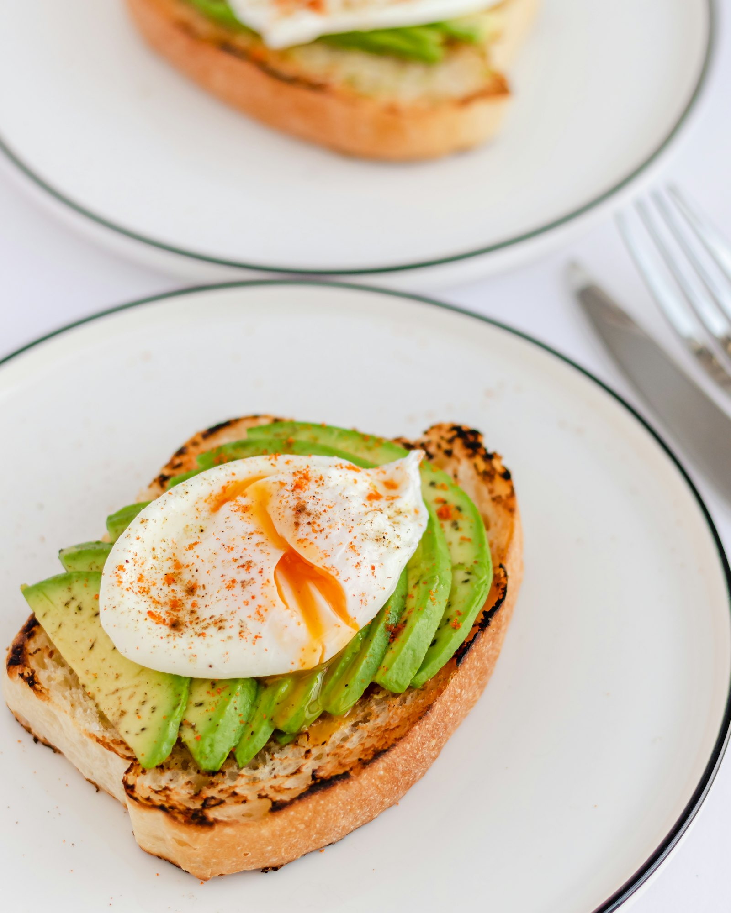
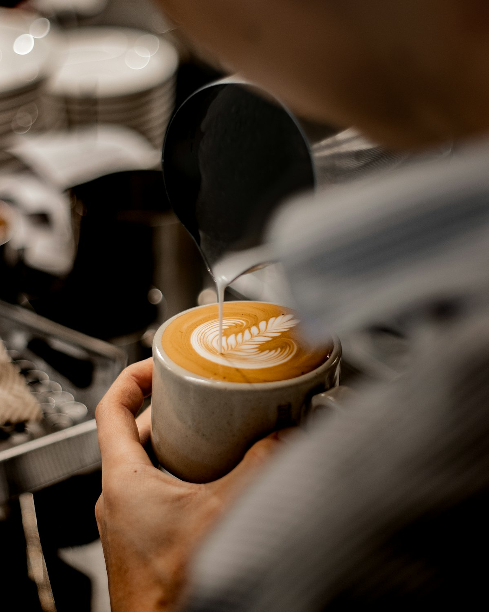
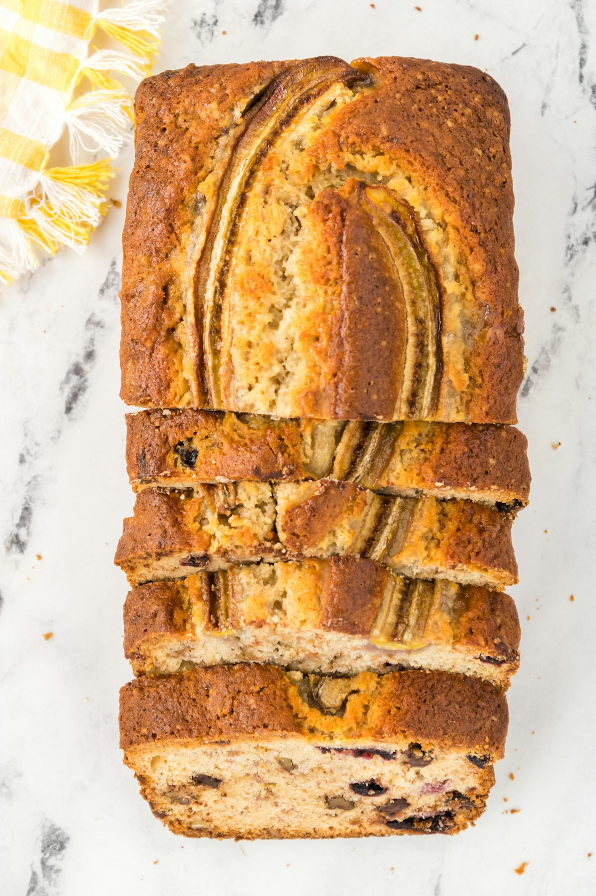
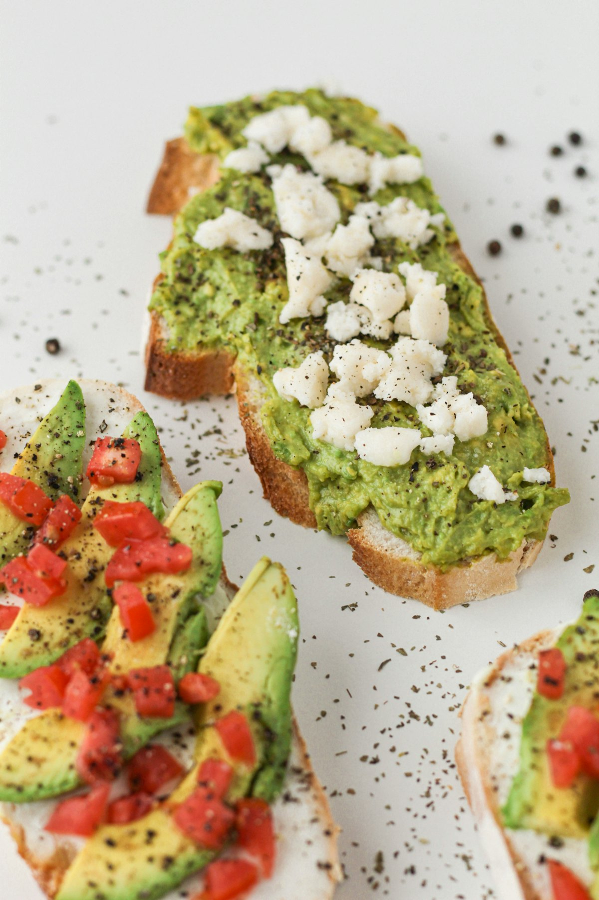
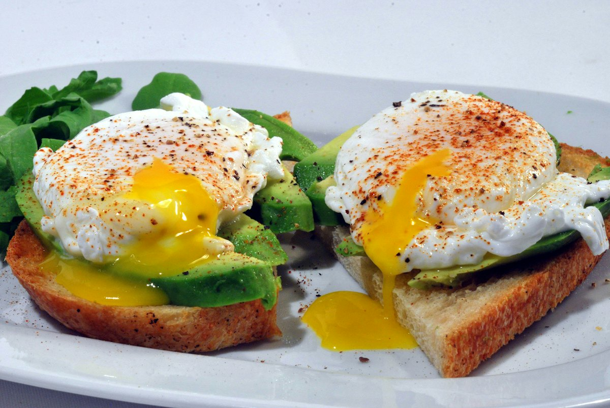
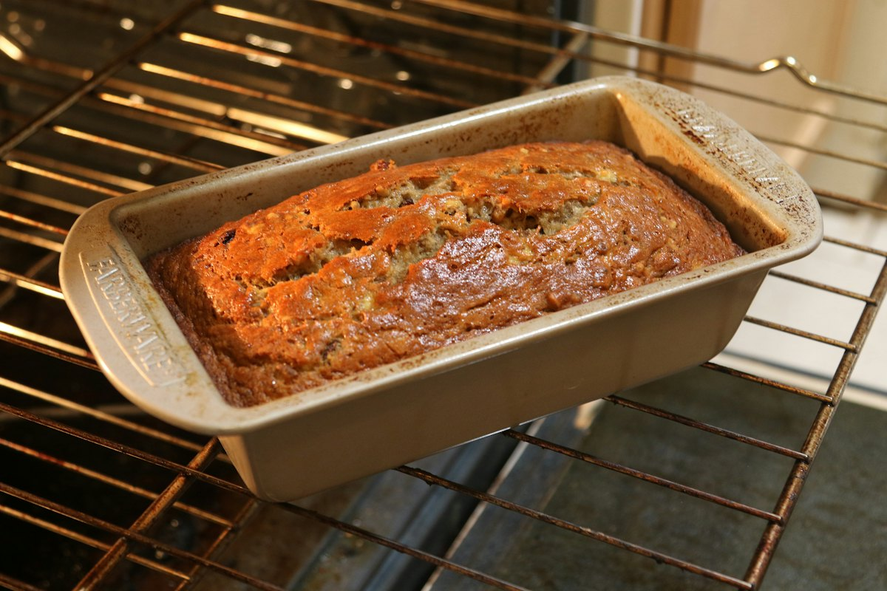

Brunch de bairro, feito devagar e servido todos os dias.
Mesas de mármore, chão de azulejo cor-de-rosa e um balcão cheio de luz. O Augusto é pequeno de propósito — para que cada brunch seja servido com tempo.
Abrimos em 2023 e depressa virámos paragem obrigatória de quem procura café de especialidade e brunch bem feito. O pão de banana da casa e a geleia de abóbora caseira ganharam vida própria — e sim, há fila. Vale cada minuto.




